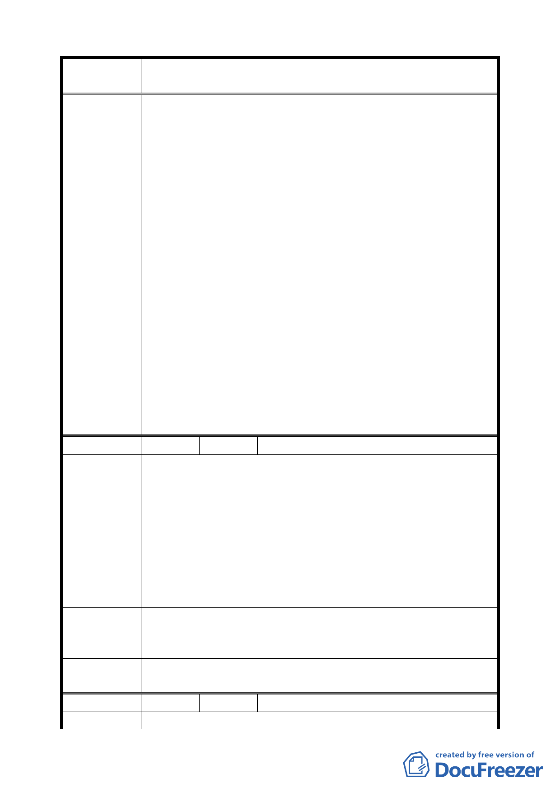

案 名 修訂臺北市南港區新光段 2 小段 27-2 等地號 15 筆土地細部
計畫案
1. 要拿回我們 31 位地主的土地，地號 45-8、45-9、45-10
和 26 地號土地合併（周潭三分之一；周興六分之二）。
2. 並要求以住二住宅區基地深寬達 200 平方公尺以上為最小
面積，才符合小面積持有人的權益及公平性和大家的期望。
3. 計畫範圍內要有八公尺以上的計畫道路。
4. 因 26、45-8、45-9、45-10 地號遭另一位地主長期佔用，
建議辦法
所以本人代表其他的小地主反對負擔包括水土保持費用、
公園費用、重劃費用一切費用，要由佔有人負擔回饋給我
們才是合理。
5. 本案自辦重劃土地所有權人同意的人數仍有問題，有簽同
意書才有效力，沒簽同意書就沒有效力，應回復南港通檢
的主要計畫案。
6. 本案土地長期遭佔用，本人反對修訂公告，得移送法院解
決。
1.有關自辦市地重劃土地分配問題依相關規定辦理。
2.本案範圍最小基地建築面積訂為 200 平方公尺以上。
委員會決議
3.本案已規定公園用地規劃設計時應於南側留設適當通道，
以供計畫區東側保護區內使用戶通行。不另留設道路。
4.有關私權問題請另行處理，參與重劃負擔依相關規定辦理。
5.經發展局查核，提送自辦市地重劃人數已達法定人數。
編 號 ２ 陳情人 臺北市政府工務局公園路燈工程管理處
有關旨揭細部計畫案第 1 頁敘及「考量東側保護區內住戶無適
當通路可供出入及第 8 頁「公園用地規劃設計時應於南側留設
適當通道以供計畫區東側保護區內使用戶通行」乙節，查本市
信義區中強公園之情形與本案類似，其區位亦阻隔東側居民之
陳 情 理 由 出入，都市計畫亦未劃設道路用地。公園內迫於民意的壓力及
市民居住安全的問題，留設道路供住戶車輛進出，而衍生大量
外車停放難以管理的情形，並造成公園使用者的安全威脅。
另依「臺北市公園管理自治條例」第 13 條第 4 款規定：「公園
內未經許可不得駕駛或違規停放車輛」。
為免日後造成管理上的困擾及威脅遊客安全，建議本案公園南
建 議 辦 法 側部分宜劃設道路用地乙處，以符管用合一原則並避免產生違
規使用情形。
委員會決議
公園用地規劃設計時應於南側留設適當通道，以供計畫區東
側保護區內使用戶通行。不另留設道路。
編 號 ３ 陳情人 周德松
陳 情 理 由 土地標示：新光段 2 小段 452 地號
三